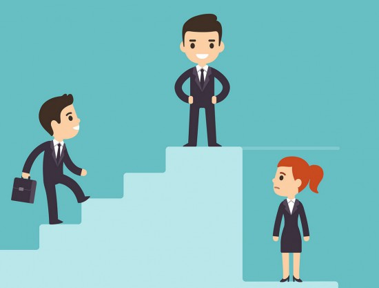

Sexismo,
Identificalo,
Detenlo.
#Forus
¿Qué es el sexismo?
El sexismo es cualquier tipo de expresión que denigre alguna persona por su sexo y/o género, ya sea en forma de inferioridad o superioridad. De esta manera promoviendo los estereotipos de roles de género, es decir, todos aquellos estereotipos que tradicionalmente se han establecido por las diferencias sexuales. Logrando impactarnos de forma negativa económica, mental, física y socialmente.
¿Qué es el sexismo?
El sexismo nos afecta en varios aspectos de nuestra vida.
Promociona el desempleo, el abuso tanto mental como físico, promociona el machismo, la mala educación, violaciones sexuales, la sexualización de la mujer, exclusión, desprecio, "chistes" desagradables, inseguridades etc. El sexismo es un problema social del cual debemos estar muy consientes para evitar que nuestra familia y nosotros seamos víctimas de este.
El sexismo se desglosa en varios tipos, aquí mencionare los más usados:
Sexismo hostil
Este tipo de sexismo se caracteriza por agresiones y el uso de la violencia física como psicológica hacia alguna persona determinada por la idea machista de que son inferiores o superiores solo por ser de ese género o sexo, lo cual hace al agresor sentir poder sobre esa persona. Por ejemplo: "La mujer se encarga de los niños mientras el hombre de la casa trae el dinero".

Sexismo benevolente
El sexismo benevolente se caracteriza por actitudes, prejuicios y comportamientos positivos en relación con un sexo o género. Es decir, este tipo de sexismo suele camuflajearse por comportamientos positivos, pero no dejan de ser prejuicios sexistas. Por ejemplo, el exceso de caballerosidad.

Sexismo ambivalente
El sexismo ambivalente es la unión en comportamientos que componen al sexismo hostil y al sexismo benevolente. Es asociado con la ideología conservadora tratando así a la mujer más pecaminosa que el hombre solo por ser mujer. Por ejemplo: "La mujer pierde su pureza cuando pierde su virginidad"